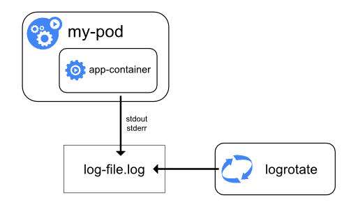

Troubleshooting
Evaluate cluster and node logging
Master Node(s)
ETCD
Usually, most etcd implementations also include etcdctl, which can aid in monitoring the state of the cluster. If you’re unsure where to find it, execute the following:
find / -name etcdctl
Leveraging this tool to check the cluster status:
etcdctl --write-out=table --endpoints=$ENDPOINTS endpoint status
+------------------------+------------------+---------+---------+-----------+------------+-----------+------------+--------------------+--------+
| ENDPOINT | ID | VERSION | DB SIZE | IS LEADER | IS LEARNER | RAFT TERM | RAFT INDEX | RAFT APPLIED INDEX | ERRORS |
+------------------------+------------------+---------+---------+-----------+------------+-----------+------------+--------------------+--------+
| https://127.0.0.1:2379 | 4e30a295f2c3c1a4 | 3.5.0 | 8.1 MB | true | false | 3 | 7903 | 7903 | |
+------------------------+------------------+---------+---------+-----------+------------+-----------+------------+--------------------+--------+The cluster this was executed on has only one master node, hence only one result from the script. You will normally receive a response for each etcd member in the cluster.
Alternatively, leverage kubectl get componentstatuses:
kubectl get componentstatuses #ComponentStatus is deprecated in v1.19+
NAME STATUS MESSAGE ERROR
scheduler Healthy ok
controller-manager Healthy ok
etcd-1 Healthy {"health":"true"}
etcd-0 Healthy {"health":"true"} Etcd may also be running as a Pod:
kubectl logs etcd-ubuntu -n kube-systemKube-apiserver
This is dependent on the environment for which the Kubernetes platform has been installed on. For systemd based systems:
journalctl -u kube-apiserverOr
cat /var/log/kube-apiserver.logOr for instances where Kube-API server is running as a static pod:
kubectl logs kube-apiserver-k8s-master-03 -n kube-systemKube-Scheduler
For systemd-based systems
journalctl -u kube-schedulerOr
cat /var/log/kube-scheduler.logOr for instances where Kube-Scheduler is running as a static pod:
kubectl logs kube-scheduler-k8s-master-03 -n kube-systemKube-Controller-Manager
For systemd-based systems
journalctl -u kube-controller-managerOr
cat /var/log/kube-controller-manager.logOr for instances where Kube-controller manager is running as a static pod:
kubectl logs kube-controller-manager-k8s-master-03 -n kube-systemWorker Node(s)
CNI
Obviously this is dependent on the CNI in use for the cluster you’re working on. However, using Flannel as an example:
journalctl -u flanneldIf running as a pod, however:
Kubectl logs --namespace kube-system <POD-ID> -c kube-flannel
kubectl logs --namespace kube-system weave-net-pwjkj -c weaveKube-Proxy
For systemd-based systems
journalctl -u kube-proxyOr
cat /var/log/kube-proxy.logOr for instances where Kube-proxy manager is running as a static pod:
kubectl logs kube-proxy -n kube-systemKubelet
journalctl -u kubeletOr
cat /var/log/kubelet.logContainer Runtime
Similarly to the CNI, this depends on which container runtime has been deployed, but using Docker as an example:
For systemd-based systems:
journalctl -u docker.serviceOr
cat /var/log/docker.logHint : list the contents of etc/systemd/system if it’s a systemd-based service (containerd.service may be here)
Cluster Logging
At a cluster level, kubectl get events provides a good overview.
Understand how to monitor applications
This section is a bit open-ended as it highly depends on what you have deployed and the topology of an application. Typically, however, we have an application that runs as a number of inter-connected microservices, consequently we monitor our applications by monitoring the underlying objects that comprise it, such as:
- Pods
- Deployments
- Services
- etc
Manage container stdout & stderr logs

Kubernetes handles and redirects any output generated from a containers stdout and stderr streams. These get directed through a logging driver which influences where to store these logs. Different implementations of Docker differ in exact implementation (such as RHEL's flavor of Docker) but commonly, these drivers will write to a file in json format:
root@ubuntu:~# docker info | grep "Logging Driver"
Logging Driver: json-fileThe location for these logs is typically /var/log/containers but can be tweaked. Additionally, these contain symlinks:
root@ubuntu:~# ls -la /var/log/containers/
total 44
drwxr-xr-x 2 root root 4096 Feb 8 19:18 .
drwxrwxr-x 11 root syslog 4096 Feb 12 00:00 ..
lrwxrwxrwx 1 root root 100 Feb 8 19:17 coredns-74ff55c5b-j4trd_kube-system_coredns-5d65324791ffcdf45d3552d875c6834f9a305c5be84b18745cb1657f784e5dd0.log -> /var/log/pods/kube-system_coredns-74ff55c5b-j4trd_4afbef57-5592-4edb-96af-9d17f595d160/coredns/0.log
lrwxrwxrwx 1 root root 100 Feb 8 19:17 coredns-74ff55c5b-wrgkr_kube-system_coredns-b2fcfa679e9725dbe601bc1a0f218121a9c44b91d7300bbb57039a4edd219991.log -> /var/log/pods/kube-system_coredns-74ff55c5b-wrgkr_b64ac6d5-654b-4194-b6a8-5f8aa4c3cbe2/coredns/0.log
lrwxrwxrwx 1 root root 81 Feb 8 19:16 etcd-ubuntu_kube-system_etcd-fcc5bc99932f380781776baa125b6f3be035e18fcec520afb827102e2afce1cd.log -> /var/log/pods/kube-system_etcd-ubuntu_f608198a8b73b3cf090bd15e2823df04/etcd/0.log
lrwxrwxrwx 1 root root 101 Feb 8 19:16 kube-apiserver-ubuntu_kube-system_kube-apiserver-a264bbd54b7f23c8d424b0b368a48fdd1c5dcecc72fca95a460c146b2b5d85f5.log -> /var/log/pods/kube-system_kube-apiserver-ubuntu_212641053a16fa2bb404ccde20f6eaf0/kube-apiserver/0.log
lrwxrwxrwx 1 root root 119 Feb 8 19:17 kube-controller-manager-ubuntu_kube-system_kube-controller-manager-a4ef7fe2b52272ea77f8de2da0989a9bcee757ae778fc08f1786b26b45bf13e1.log -> /var/log/pods/kube-system_kube-controller-manager-ubuntu_7bbe7d37f1b2c7586237165580c2f5c3/kube-controller-manager/0.log
lrwxrwxrwx 1 root root 102 Feb 8 19:05 kube-flannel-ds-rfsfs_kube-system_install-cni-f8762e22fbf17925432682bdb1259a066208c62fa695d09cd6ee9b0cef3d36ba.log -> /var/log/pods/kube-system_kube-flannel-ds-rfsfs_2892d4e3-e326-4b4b-90c0-396fb80863ca/install-cni/0.log
lrwxrwxrwx 1 root root 103 Feb 8 19:05 kube-flannel-ds-rfsfs_kube-system_kube-flannel-f96e019717814d7360e1aacd275cac121c13e0ee94cc5c93dcb35365608e6f83.log -> /var/log/pods/kube-system_kube-flannel-ds-rfsfs_2892d4e3-e326-4b4b-90c0-396fb80863ca/kube-flannel/0.log
lrwxrwxrwx 1 root root 96 Feb 8 19:17 kube-proxy-l52f9_kube-system_kube-proxy-bfe08cb8663b46551e8608c094194ec61d03edfa7d25a6f414c07ed6563ada89.log -> /var/log/pods/kube-system_kube-proxy-l52f9_d2b73ed1-5df4-4a18-9595-20798db4f110/kube-proxy/0.log
lrwxrwxrwx 1 root root 101 Feb 8 19:17 kube-scheduler-ubuntu_kube-system_kube-scheduler-4a695e53684f4591ec9385d6944f7841c0329aa49be220e5af6304da281cb41a.log -> /var/log/pods/kube-system_kube-scheduler-ubuntu_69cd289b4ed80ced4f95a59ff60fa102/kube-scheduler/0.logTroubleshoot application failure
This is a somewhat ambitious topic to cover as how we approach troubleshooting application failures varies by the architecture of that application, which resources/API objects we're leveraging, if the application contains logs. However, good starting points would include running things like:
kubectl describe <object>kubectl logs <podname>kubectl get events
Troubleshoot cluster component failure
Covered in "Evaluate cluster and node logging"
Troubleshoot networking
DNS Resolution
Pods and Services will automatically have a DNS record registered against coredns in the cluster, aka "A" records for IPv4 and "AAAA" for IPv6. The format of which is:
pod-ip-address.my-namespace.pod.cluster-domain.example
my-svc-name.my-namespace.svc.cluster-domain.example
Pod DNS records resolve to a single entity, even if the Pod contains multiple containers as they share the same networking space.
Service DNS records resolve to the respective service object.
Pods will automatically have their DNS resolution configured based on coredns settings. This can be validated by opening a shell to the pod and inspecting /etc/resolv.conf:
> kubectl exec -it web-server sh
kubectl exec [POD] [COMMAND] is DEPRECATED and will be removed in a future version. Use kubectl kubectl exec [POD] -- [COMMAND] instead.
/ # cat /etc/resolv.conf
nameserver 10.43.0.10
search default.svc.cluster.local svc.cluster.local cluster.local eu-central-1.compute.internal
options ndots:510.43.0.10 being the coredns service object:
> kubectl get svc -n kube-system
NAME TYPE CLUSTER-IP EXTERNAL-IP PORT(S) AGE
kube-dns ClusterIP 10.43.0.10 <none> 53/UDP,53/TCP,9153/TCP 16dTo test resolution, we can run a pod with nslookup to test. For the pod below:
> kubectl get po -o wide
NAME READY STATUS RESTARTS AGE IP NODE NOMINATED NODE READINESS GATES
web-server 1/1 Running 0 2d20h 10.42.1.31 ip-172-31-36-67 <none> <none>Knowing the format of the A record:
pod-ip-address.my-namespace.pod.cluster-domain.example
We should be able to resolve 10-42-1-31.default.pod.cluster.local. Tip : To determine the cluster domain, inspect the coredns configmap. Below indicating cluster.local.
> kubectl get cm coredns -n kube-system -o yaml
apiVersion: v1
data:
Corefile: |
.:53 {
errors
health {
lameduck 5s
}
ready
kubernetes cluster.local in-addr.arpa ip6.arpa {Create a Pod with the tools required:
kubectl apply -f https://k8s.io/examples/admin/dns/dnsutils.yamlTest lookup:
kubectl exec -i -t dnsutils -- nslookup 10-42-1-31.default.pod.cluster.local> kubectl exec -i -t dnsutils -- nslookup 10-42-1-31.default.pod.cluster.local
Server: 10.43.0.10
Address: 10.43.0.10#53
Name: 10-42-1-31.default.pod.cluster.local
Address: 10.42.1.31Similarly, for a service, in this case a service called nginx-service that resides in the default namespace:
> kubectl exec -i -t dnsutils -- nslookup nginx-service.default.svc.cluster.local
Server: 10.43.0.10
Address: 10.43.0.10#53
Name: nginx-service.default.svc.cluster.local
Address: 10.43.0.223> kubectl get svc
NAME TYPE CLUSTER-IP EXTERNAL-IP PORT(S) AGE
nginx-service ClusterIP 10.43.0.223 <none> 80/TCP 9m15sCNI Issues
Mainly covered earlier in acquiring logs for the CNI. However, one issue that might occur is when a CNI is incorrectly, or not initialised. This may cause workloads to enter a pending status:
kubectl get po -o wide
NAME READY STATUS RESTARTS AGE IP NODE NOMINATED NODE READINESS GATES
nginx 0/1 Pending 0 57s <none> <none> <none> <none>kubectl describe <pod> can help identify issues with assigning IP addresses to nodes from the CNI
Port Checking
Similarly, with leveraging nslookup to validate DNS resolution in our cluster, we can lean on other tools to perform other diagnostic. All we need is a pod that has a utility like netcat, telnet etc.